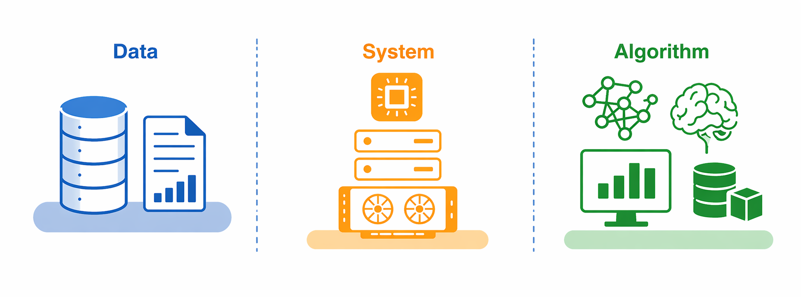
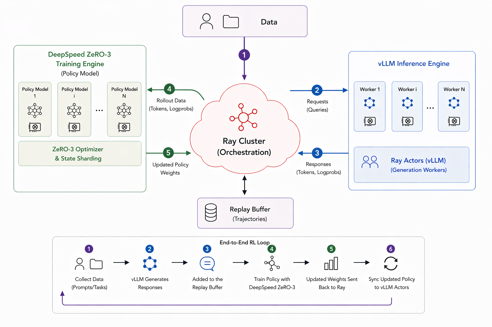
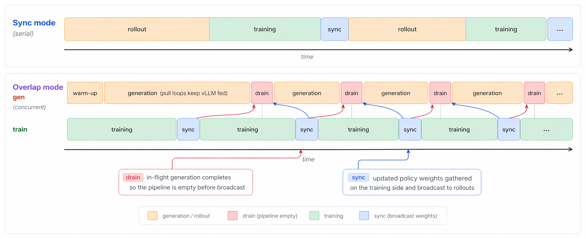
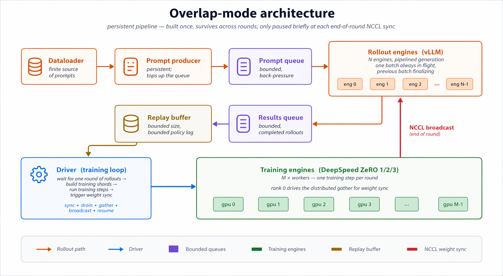

Reinforcement learning is structurally harder than supervised learning, and that difficulty shows up as brittleness in practice. In most RL settings, training data is generated by the current policy, so the distribution shifts as the policy changes, unlike the fixed-data setting of supervised learning. At the same time, rewards are often sparse, delayed, or imperfect proxies for the behavior we actually want. As a result, performance is highly sensitive to reward design, exploration, credit assignment, optimization, and the interaction between data collection and policy improvement.
These problems do not disappear in large-model post-training. They are joined by a separate class of systems challenges. RL for LLMs, VLMs, and other large models requires distributed training, orchestration, rollout engines, and reliable coordination between rollout and learning. Better systems expand what is feasible, for example through higher-throughput rollouts, broader sampling, and lower-variance gradients, but they do not by themselves fix the fragile algorithmic side of RL. Some of the hardest issues sit exactly at the boundary between the two layers. Policy staleness from asynchronous rollouts is a clear example: it is created by systems choices but has to be absorbed algorithmically, through truncated importance sampling, trust-region corrections, or similar stabilization mechanisms. That entanglement is exactly why the two layers should be separable.
This matters because tooling shapes what becomes easy to study. When even a modest algorithmic change requires touching rollout code, orchestration, distributed training, and data plumbing all at once, many ideas become too expensive to test seriously. In practice, that pushes experimentation toward methods that already fit the existing stack. That is not a criticism of current frameworks; it is a natural consequence of how costly large-scale RL systems are to build and maintain.
FeynRL Is Motivated by This Gap.
FeynRL is motivated by this gap. Its purpose is specific: to provide the systems needed for realistic large-model training while keeping the algorithmic, data, and systems layers modular, legible, and separable. The goal is to make it easier to build and study new RL methods for large models without turning every algorithmic idea into an infrastructure project. In reverse, someone working on a new rollout engine, async scheduler, or weight-sync backend should be able to do that without wading through algorithm code. Importantly, FeynRL is also built with training stability in mind: methods include the practical stabilization details often omitted from other implementations, which are typically what separates an algorithm that works on paper from one that works at scale.
FeynRL should be viewed as orthogonal to existing frameworks rather than a criticism of them. Many current frameworks are powerful, highly optimized, and extremely useful. FeynRL is built around a different tradeoff: it prioritizes clarity, locality of change, and method development while still supporting realistic large-scale post-training. The goal is not to avoid systems work, but to keep systems complexity from swallowing the algorithmic layer.

High-Level Overview
Separation of concerns is the central design principle. Someone building a new RL algorithm should not need to work through a deeply entangled codebase spanning rollout workers, orchestration, data plumbing, and distributed execution just to change a loss or update rule. The reverse should also hold: someone building a new rollout engine or sync strategy should not have to touch every algorithm implementation. At the same time, FeynRL is not a toy framework. It supports realistic large-model post-training with the systems needed to run at scale, while remaining interpretable enough to modify without rewriting the whole stack.
Concretely, FeynRL supports supervised fine-tuning, preference learning, and reinforcement learning in a shared structure. It includes methods such as SFT, DPO, PPO, GRPO, CISPO, and P3O, together with rollout engines such as vLLM, orchestration with Ray, distributed optimization with DeepSpeed, sync and async execution modes, and modular reward, data, and evaluation layers. These components matter not because the project is trying to maximize scope, but because they provide the minimum substrate needed to investigate RL methods seriously at large-model scale while keeping the layers cleanly separable.
Under the hood, FeynRL is organized along three axes that can be worked on independently: algorithms (the loss and update rules), rollouts (generation, rewards, and replay), and orchestration (distributed execution and weight synchronization between the training and inference engines). These layers communicate through narrow interfaces, so a new RL method is usually a new loss and update rule rather than a rewrite of the execution graph.

Sync vs Async
Where algorithms and systems interact most visibly is the training-rollout schedule, and FeynRL supports two modes:
- Sync mode: each epoch generates all rollouts, trains on them, synchronizes the updated weights to the rollout engines, and repeats.
- Async mode: generation and training run concurrently on separate GPU pools.

Async Mode
In async mode, generation and training run concurrently on separate GPU pools, with bounded queues, replay, and periodic weight synchronization making the throughput-staleness tradeoff explicit.

Results
We have run extensive post-training experiments with FeynRL across a range of models, datasets, and methods. This release surfaces the first set of those results; more will follow on an ongoing basis as the work continues.
Qwen2.5-1.5B-Instruct on GSM8K
Training data comes from GSM8K. Evaluation uses the shared mathematical reasoning benchmark suite reported across the release, spanning GSM8K, AIME, AMC, AMO, Brumo, HMMT, and Olympiad-style sets.
| Run | Pass@1 | Pass@16 |
|---|---|---|
| Base | 12.0% | 26.4% |
| FeynRL | 12.2% | 27.0% |
Qwen3-4B-Thinking-2507 on DeepScaler
Training data comes from the DeepScaler preview dataset. Evaluation again uses the same benchmark suite, with prompt formatting aligned to the model's released setup.
| Run | Pass@1 | Pass@16 |
|---|---|---|
| Base | 12.2% | 19.7% |
| FeynRL | 27.0% | 40.2% |